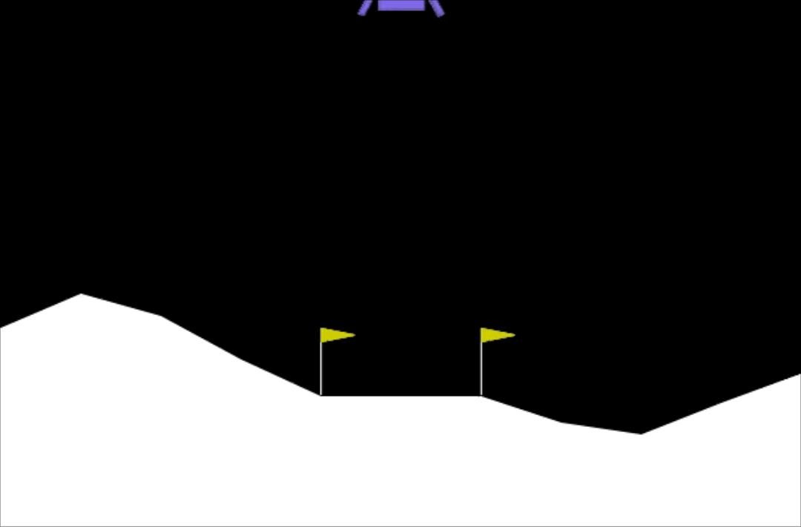
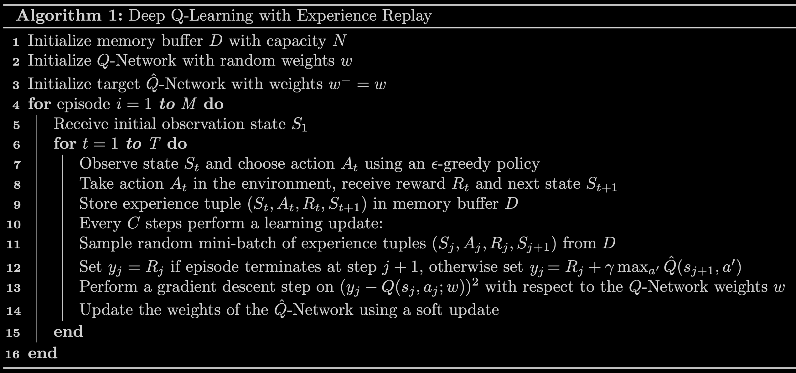

Học tăng cường & Deep Q-Learning
Không ai chỉ cho tàu đổ bộ cách hạ cánh. Nó chỉ được thưởng khi đáp êm và bị phạt khi rơi vỡ — và tự học ra cách điều khiển sau vài trăm lần thử.

Khung học tăng cường
Trong học tăng cường (reinforcement learning, RL), một tác tử (agent) tương tác với môi trường theo từng bước thời gian \(t\):
- Quan sát trạng thái \(s_t\);
- Chọn hành động \(a_t\) theo chính sách \(\pi(s)\);
- Nhận phần thưởng \(R_t\) và chuyển sang trạng thái mới \(s_{t+1}\).
Ta không bảo tác tử làm gì, chỉ bảo nó điều gì tốt (hàm phần thưởng). Giống huấn luyện chó: thưởng khi làm đúng, không cần giải thích cách làm.
Return và hệ số chiết khấu
\(\gamma\) (gamma) làm phần thưởng ở xa có giá trị nhỏ hơn — tác tử “thiếu kiên nhẫn”, ưu tiên phần thưởng sớm. Phần thưởng âm (phạt) bị đẩy càng xa càng tốt. Lab dùng \(\gamma = 0.995\).
Markov Decision Process (MDP)
Tính chất Markov: tương lai chỉ phụ thuộc trạng thái hiện tại, không phụ thuộc cách ta đi đến đó. Mục tiêu RL: tìm chính sách \(\pi\) cực đại hoá return kỳ vọng.
Hàm giá trị trạng thái–hành động Q(s, a)
\(Q(s, a)\) = return nếu bắt đầu ở trạng thái \(s\), thực hiện hành động \(a\) một lần, rồi sau đó hành động tối ưu. Nếu biết \(Q\), chính sách tốt nhất rất đơn giản:
Phương trình Bellman
Return = phần thưởng nhận ngay + giá trị (đã chiết khấu) của trạng thái tiếp theo khi hành động tối ưu. Đây là định nghĩa đệ quy cho phép ta học \(Q\) dần dần.
Khi hành động không luôn dẫn đến cùng một kết quả (ví dụ robot trượt chân), ta tối đa hoá kỳ vọng: \(Q(s,a) = R(s) + \gamma\,\mathbb{E}\left[\max_{a'}Q(s',a')\right]\).
Bài toán Lunar Lander
| Thành phần | Chi tiết |
|---|---|
| Trạng thái (8 số) | toạ độ \(x, y\); vận tốc \(\dot x, \dot y\); góc \(\theta\); vận tốc góc \(\dot\theta\); hai cờ \(l, r\) cho biết chân trái/phải chạm đất |
| Hành động (4) | 0 = không làm gì · 1 = động cơ trái · 2 = động cơ chính · 3 = động cơ phải |
| Phần thưởng | + khi tiến gần bãi đáp và chậm lại; +10 mỗi chân chạm đất; +100 hạ cánh an toàn, −100 rơi vỡ; −0.3 mỗi khung hình bật động cơ chính, −0.03 cho động cơ bên |
| Kết thúc | tàu rơi vỡ, bay ra ngoài, hoặc đứng yên |
| Giải xong | trung bình ≥ 200 điểm trên 100 episode gần nhất |
Trạng thái là số thực liên tục → không thể lập bảng \(Q\) cho mọi trạng thái. Ta dùng một mạng nơ-ron để xấp xỉ \(Q\).
Deep Q-Network (DQN)
Mạng nhận trạng thái (8 số) và trả về \(Q(s, a)\) cho cả 4 hành động một lúc. Mạng mình xây trong lab:
q_network = Sequential([
Input(shape=(state_size,)), # 8
Dense(64, activation='relu'),
Dense(64, activation='relu'),
Dense(num_actions, activation='linear'), # 4 giá trị Q
])
target_q_network = Sequential([ # cùng kiến trúc
Input(shape=(state_size,)),
Dense(64, activation='relu'),
Dense(64, activation='relu'),
Dense(num_actions, activation='linear'),
])
optimizer = Adam(learning_rate=ALPHA) # ALPHA = 1e-3Ý tưởng huấn luyện: dùng phương trình Bellman để tự tạo nhãn. Với mỗi trải nghiệm \((s, a, R, s')\):
Biến RL thành bài toán hồi quy có giám sát với loss MSE.
Hai kỹ thuật giúp ổn định
- Target network \(\hat Q\): nếu dùng chính \(Q\) để tạo nhãn \(y\), nhãn thay đổi sau mỗi lần cập nhật — như đuổi theo cái bóng của mình. Dùng một mạng riêng \(\hat Q\) để tính \(y\), và cập nhật nó mềm (soft update) rất chậm theo \(Q\): $$ \mathbf{w}_{\hat Q} \leftarrow \tau\,\mathbf{w}_Q + (1 - \tau)\,\mathbf{w}_{\hat Q}, \qquad \tau = 10^{-3} $$
- Experience replay: lưu các trải nghiệm \((s, a, R, s', \text{done})\) vào bộ nhớ (100.000 phần tử). Mỗi lần học lấy ngẫu nhiên một mini-batch, phá vỡ tương quan giữa các bước liên tiếp.

Hàm loss — code mình viết
def compute_loss(experiences, gamma, q_network, target_q_network):
states, actions, rewards, next_states, done_vals = experiences
# max_a' Q̂(s', a') tính bằng target network
max_qsa = tf.reduce_max(target_q_network(next_states), axis=-1)
# y = R nếu episode kết thúc, ngược lại R + γ max Q̂(s', a')
y_targets = rewards + gamma * max_qsa * (1 - done_vals)
# lấy Q(s, a) của đúng hành động đã thực hiện
q_values = q_network(states)
q_values = tf.gather_nd(q_values, tf.stack([tf.range(q_values.shape[0]),
tf.cast(actions, tf.int32)], axis=1))
loss = MSE(y_targets, q_values)
return loss
@tf.function
def agent_learn(experiences, gamma):
with tf.GradientTape() as tape:
loss = compute_loss(experiences, gamma, q_network, target_q_network)
gradients = tape.gradient(loss, q_network.trainable_variables)
optimizer.apply_gradients(zip(gradients, q_network.trainable_variables))
utils.update_target_network(q_network, target_q_network) # soft updateChú ý mẹo (1 - done_vals): khi episode đã kết thúc, không có trạng thái tiếp theo, nên \(y = R\).
Khám phá hay khai thác: ε-greedy
Nếu luôn chọn \(\arg\max_a Q\), tác tử có thể không bao giờ thử những hành động mà ban đầu nó (sai lầm) đánh giá thấp. Chính sách ε-greedy:
- Với xác suất \(1 - \varepsilon\): chọn hành động có \(Q\) lớn nhất (exploitation).
- Với xác suất \(\varepsilon\): chọn ngẫu nhiên (exploration).
Bắt đầu với \(\varepsilon = 1\) (hoàn toàn ngẫu nhiên), giảm dần (nhân 0.995 sau mỗi episode) tới tối thiểu 0.01.
Kết quả huấn luyện
Episode 300 | Total point average of the last 100 episodes: -77.256
Episode 400 | Total point average of the last 100 episodes: -25.01
Episode 500 | Total point average of the last 100 episodes: 159.91
Episode 534 | Total point average of the last 100 episodes: 201.37
Environment solved in 534 episodes!
Total Runtime: 731.01 s (12.18 min)Siêu tham số: bộ nhớ 100.000, \(\gamma = 0.995\), \(\alpha = 10^{-3}\), cập nhật mỗi 4 bước, mini-batch 64. Mô hình đã huấn luyện được lưu ở lunar_lander_model.h5.
Khác học có giám sát, thuật toán RL nhạy với siêu tham số: đổi \(\gamma\), \(\tau\), learning rate hay kích thước bộ nhớ có thể làm tác tử học chậm gấp 10 lần hoặc không học được. Andrew Ng cũng lưu ý: RL rất thú vị và hứa hẹn, nhưng ứng dụng thực tế ít hơn nhiều so với học có giám sát và không giám sát.
- Double DQN, Dueling DQN, Prioritized Replay: các cải tiến của DQN, gộp lại thành Rainbow.
- Policy gradient (REINFORCE, PPO): học trực tiếp chính sách \(\pi(a|s)\) thay vì \(Q\); xử lý tốt không gian hành động liên tục (điều khiển robot). Actor-Critic (A2C, SAC) kết hợp cả hai.
- AlphaGo / AlphaZero: RL + tìm kiếm cây Monte Carlo, đánh bại nhà vô địch cờ vây.
- RLHF (Reinforcement Learning from Human Feedback): cách tinh chỉnh các LLM như ChatGPT, Claude — con người so sánh các câu trả lời, một mô hình phần thưởng học từ đó, rồi PPO (hoặc các biến thể như DPO) tối ưu mô hình ngôn ngữ theo phần thưởng.
- Thư viện: Gymnasium (kế nhiệm OpenAI Gym), Stable-Baselines3 (cài sẵn DQN, PPO, SAC…).
import gymnasium as gym
from stable_baselines3 import DQN
env = gym.make("LunarLander-v3")
model = DQN("MlpPolicy", env, verbose=1).learn(total_timesteps=500_000)- C3 Practice Lab — Deep Q-Learning, Lunar Lander (graded: Q-network, target network,
compute_loss)
Từ ghi chú Notion
- Agent: tác nhân đưa ra quyết định.
- Environment: môi trường mà agent tương tác.
- State (S): trạng thái hiện tại.
- Action (A): hành động có thể thực hiện.
- Reward (R): phản hồi dạng số về “độ tốt” của hành động.
- Policy (π): chiến lược chọn hành động theo trạng thái.
- Value function: đánh giá độ tốt của một trạng thái hoặc hành động.
- Model (tuỳ chọn): mô phỏng môi trường để dự đoán kết quả.
Mục tiêu là cân bằng exploration (thử hành động mới) và exploitation (dùng hành động đã biết là tốt) để tối đa tổng phần thưởng. Ứng dụng: trò chơi (AlphaGo), robot và xe tự lái, quản lý tài nguyên mạng, giao dịch tự động, tối ưu phác đồ điều trị.
Nguồn Notion: def Reinforcement Learning
| Loại | Dạng | Ví dụ |
|---|---|---|
| Xác định (deterministic) | \(\pi: S \to A\) | ở \(S_1\) luôn làm \(A_2\) |
| Ngẫu nhiên (stochastic) | \(\pi(a \mid s)\) | ở \(S_1\): \(A_1\) với xác suất 0.7, \(A_2\) với 0.3 |
- Biểu diễn: dạng bảng khi không gian trạng thái/hành động nhỏ; dạng tham số hoá (mạng nơ-ron) khi lớn hoặc liên tục, như Deep Q-Learning.
- Ba hướng tối ưu: value-based (học Q rồi suy ra policy, ví dụ ε-greedy trong Q-learning), policy-based (policy gradient), và actor-critic (actor cập nhật policy, critic đánh giá hành động).
- Các policy hay gặp: greedy (luôn chọn Q lớn nhất), ε-greedy, softmax (chọn theo phân phối xác suất từ các giá trị Q).
Nguồn Notion: Policies in reinforcement learning · Reinforcement Learning
Ghi nhớ
- RL: trạng thái, hành động, phần thưởng, chính sách; tối đa hoá return có chiết khấu \(\gamma\).
- Bellman: \(Q(s,a) = R(s) + \gamma\max_{a'}Q(s',a')\); chính sách tối ưu \(\pi(s) = \arg\max_a Q(s,a)\).
- DQN: mạng nơ-ron xấp xỉ Q, huấn luyện với nhãn Bellman, ổn định nhờ target network + experience replay, khám phá bằng ε-greedy.
Tự kiểm tra
Phần thưởng [0, 0, 0, 100], γ = 0.5. Return từ trạng thái đầu bằng bao nhiêu?
\(0 + 0.5\cdot 0 + 0.25\cdot 0 + 0.125 \cdot 100 = 12.5\).
Vì sao lớp đầu ra của Q-network có 4 nơ-ron thay vì nhận (s, a) làm đầu vào và trả 1 giá trị?
Hiệu quả hơn: một lần forward cho ngay Q của cả 4 hành động, đủ để tính \(\max_a\) và chọn hành động. Nếu nhận (s, a) làm đầu vào thì phải chạy mạng 4 lần.